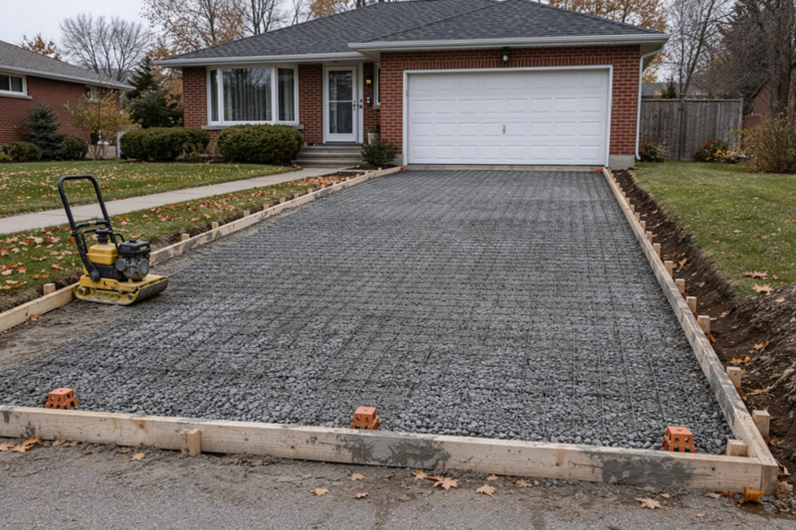
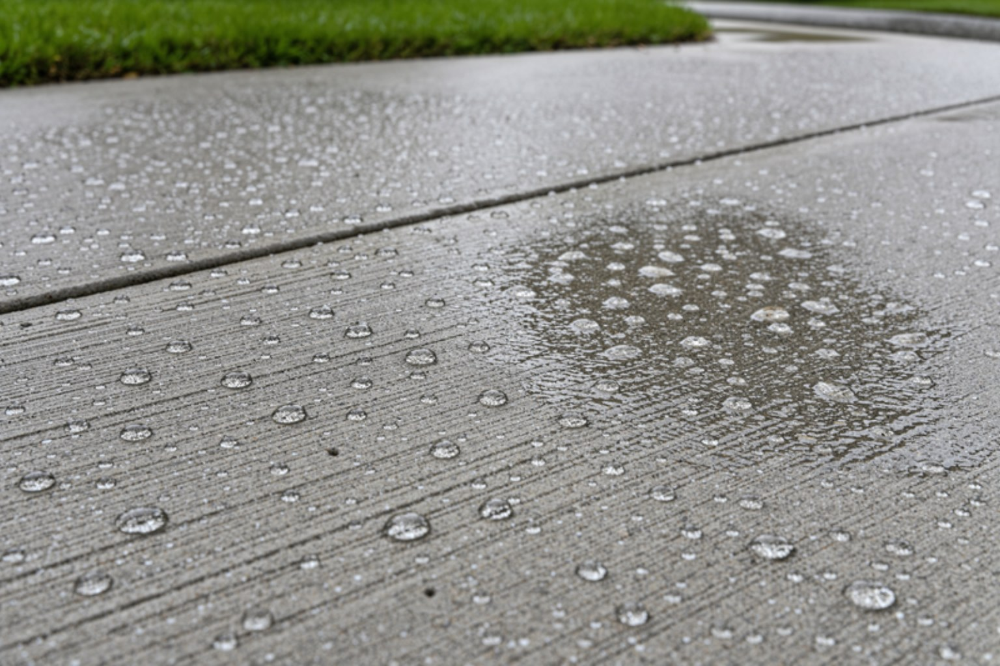
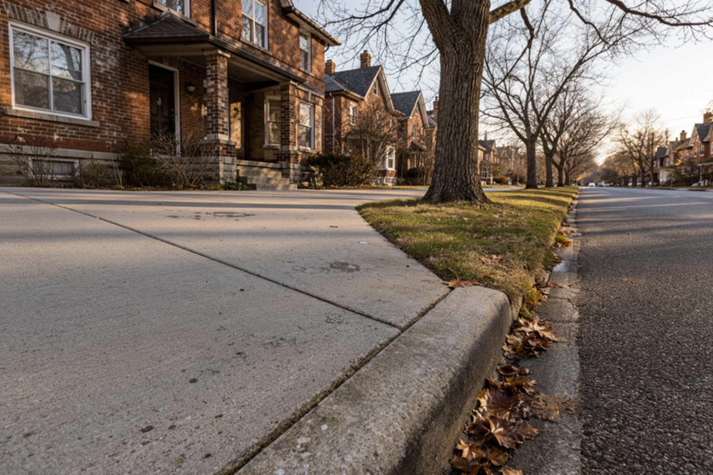

A properly built concrete driveway in Southern Ontario is a thirty-year surface. A badly built one is a five-year surface with a thirty-year price tag. The difference is never visible on pour day, so this guide is about what you are paying for underneath the finish.
Artisan Coat now pours new concrete as well as resurfacing it: driveways and parking pads, front steps, walkways and stamped concrete across Toronto, Mississauga, Vaughan, Markham and the rest of the GTA. We still resurface more driveways than we replace, which is why we are comfortable telling you which one you need.
New Concrete Driveway Cost in Toronto (2026)
Poured driveways are priced per square foot, and the number moves with how much old surface has to come out, how deep the base has to go, and the finish you choose. Concrete itself is a small part of the bill; excavation, base, forming, reinforcement and labour are where the money goes. These ranges are typical for the GTA in 2026.
| Driveway Project | Installed (GTA, 2026) | Notes |
|---|---|---|
| Broom-finish concrete, per sq ft | $12 – $20 | 5-inch reinforced slab on compacted base |
| Exposed aggregate, per sq ft | $16 – $26 | Washed pebble finish, excellent traction |
| Stamped concrete, per sq ft | $22 – $32 | Pattern, integral colour, release, sealer |
| Single-car driveway, approx. 400 sq ft | $6,000 – $9,500 | Add $1,500–$3,000 to remove the old surface |
| Double driveway, approx. 600 sq ft | $8,500 – $13,500 | Add $2,000–$4,000 removal |
| Stamped or coloured border on a broom field | $1,200 – $3,000 | Priced per linear foot; the most popular upgrade |
| Resurfacing an existing 2-car driveway | $4,500 – $12,000 | Only on a sound, level slab; see below |
A driveway quote under $10 per square foot is missing something. Almost always it is one of four items: the 6–8 inches of compacted base, the reinforcement, the air-entrained 32 MPa mix, or removal and disposal of the old slab. Ask for each of them in writing. The cheapest driveway in the neighbourhood is the one being re-poured in 2031.
Concrete vs Asphalt vs Interlock in the GTA
Concrete sits in the middle on price and at the top on lifespan. Asphalt is cheaper to install, typically $3,500–$6,500 for a double driveway in the GTA, but it softens in July, scars under turning tires and needs replacing in 15–20 years. Interlocking pavers run $11,000–$18,000 for the same driveway and look superb on day one, but every joint is a place for weeds and frost to work, and settled pavers at the apron are a familiar sight on any street in Vaughan or Richmond Hill after a decade.
A concrete driveway built to the spec below is one reinforced slab with nothing to shift and nowhere for weeds to grow. It takes a plow blade without gouging, and its one real weakness, salt in the first winter, is a management problem rather than a material one.
Asphalt is the cheapest driveway to buy. Concrete is the cheapest driveway to own. Over thirty years that is not a close call.
Replace the Driveway or Resurface It?
A contractor who only does one of the two will give you a biased answer. Artisan Coat does both, so the test is the same for every driveway we look at.
- Resurface when the slab is level, drains to the street, and the problems are on the surface: scaling, pitting, hairline cracks, stains. A Jewelstone driveway overlay bonds to that slab and costs 40–60% less than tearing it out.
- Pour new when the slab has moved: one side of a crack higher than the other, a section settled toward the garage, an apron dropped at the curb, or concrete crumbling through its full depth. We also pour new when the existing slab is under 4 inches, common on pre-1980s Toronto driveways; no overlay turns a 3-inch slab into one that can carry an SUV.
- Asphalt always comes out. Concrete is never poured over it; the base is rebuilt and the slab goes on that.
First group? Start with our resurfacing cost guide and pour-versus-resurface guide. The rest of this article is for the second.

How a Concrete Driveway Is Built to Last 30 GTA Winters
Southern Ontario runs a slab through dozens of freeze-thaw cycles a winter and buries it in salt. A spec that works in Vancouver does not work in Brampton. Every line below is a question to ask any contractor quoting your job.
- Excavate to firm subgrade. Old surface and soft soil out, to a total depth of 11–13 inches below finished grade.
- 6–8 inches of compacted granular base. Placed in lifts and plate-compacted each time. Base that is dumped and raked once settles the first wet spring, and the slab follows it down. This is the most common reason a new GTA driveway cracks.
- A 5-inch slab, 6 inches at the apron. Four inches is a walkway thickness. A driveway carries vehicles and snow loads, and the apron takes the plow, so it gets an extra inch.
- Reinforcement on chairs. Wire mesh or 10M rebar held in the middle of the slab, not lying on the base where it does nothing. Steel does not stop cracks; it keeps them from opening and stepping.
- 32 MPa air-entrained concrete. Exterior concrete in Ontario should be a C-2 exposure class mix: 32 MPa, 5–8% entrained air, low water-to-cement ratio. The air gives freezing water somewhere to expand; without it the surface scales within two or three winters. This is the line cheap pours quietly drop.
- Slope a quarter inch per foot toward the street, never toward the garage. Where the lot falls toward the house, a trench drain at the garage door is part of the job.
- Control joints every 10–12 feet, cut a quarter of the slab deep within 24 hours, plus isolation joints at the garage, house and sidewalk. Concrete will crack as it shrinks; joints tell it where.
- Cure for a week, seal at 28 days. Curing compound or wet burlap for seven days, foot traffic after two or three, cars after seven. Then a penetrating sealer once fully cured, and every two to three years after; our sealing guide covers products and timing.

No de-icing salt on a new concrete driveway for its first winter. The surface is still gaining strength and salt pulls moisture into it exactly when it is most vulnerable. Shovel promptly and use sand or a calcium-magnesium-acetate product for traction. From the second winter on, a sealed, air-entrained slab handles salt the way it was designed to. Our freeze-thaw guide has the full winter routine.
Driveway Permits, Width Limits and the City-Owned Apron
Replacing a driveway at its existing size and location does not normally need a permit in the GTA. The rules kick in the moment you change something. In Toronto, widening a driveway, adding front-yard parking, or enlarging the curb cut all need City approval, and the zoning by-law caps driveway width and how much of a front yard can be paved. Mississauga, Brampton, Vaughan and Markham each have their own limits and widening permits. Pour first and ask later and the municipality can order the extra width removed at your cost.
The other surprise is the apron, the strip between the public sidewalk and the curb. That is municipal right-of-way, not your property. You can usually replace it with the rest of the driveway, but it has to meet the City’s standard and sometimes needs its own permit. A good contractor flags this at the quote stage.

Finish Options for a Poured Concrete Driveway
- Broom finish. The standard: a light-to-medium broom drag for traction, grey or integrally coloured. Clean, durable, lowest cost per square foot.
- Exposed aggregate. The cement paste is washed off the top before it sets to reveal the stone. Excellent grip under snow and hides tire marks and salt haze. See our exposed aggregate guide.
- Stamped concrete. Slate, ashlar, cobble or flagstone patterns pressed into the fresh pour with integral colour and a contrasting release. The most expensive option and the one that most needs re-sealing every two to three years. On a sound existing driveway, a stamped overlay gives the same look for less.
- Broom field with a decorative border. The value play: a broom centre with a stamped or exposed-aggregate band 12–18 inches wide along the edges and apron. Most of the curb appeal of a full stamped driveway at a fraction of the price, and a plain broom slab can always take a Jewelstone overlay later.
Timeline: Booking a Spring 2027 Driveway Pour
At the end of November the GTA pouring season is over. Concrete needs to be placed and cured above about 5°C, and a residential driveway is not worth the cost and risk of heated enclosures; our cold-weather pouring guide explains why. Pours restart in April, and the homeowners who get an April or May driveway are the ones who booked over the winter.
- December to February: site visit, soil check, finish selection and a fixed quote. Any permit application goes in now.
- March: deposit and a confirmed pour window.
- April to May: excavation and base, forms and steel, pour, joints cut within 24 hours. Four to five working days, then cars back on after seven.
- 28 days after the pour: sealer applied. Done.
If your driveway has to survive one more winter, make it safe rather than pretty: fill the worst trip hazards and keep the salt light. For a cracked but stable slab, our concrete repair service can buy a season or two.
Where We Work
Artisan Coat pours and resurfaces concrete driveways, steps, walkways, porches and patios across Toronto, Mississauga, Brampton, Vaughan, Oakville, Etobicoke, North York, Scarborough, Richmond Hill, Markham, Burlington, Milton, Caledon, Hamilton and the wider GTA. One crew with 20+ years of concrete work handles excavation through sealer, backed by a written warranty. See all of our concrete services.
The Short Version
A new broom-finish concrete driveway in Toronto costs $12–$20 per square foot in 2026: roughly $6,000–$9,500 for a single and $8,500–$13,500 for a double, plus removal of the old surface. Concrete costs more than asphalt to install, less than interlock, and outlasts both. Resurface instead if the slab you have is level and sound.
Whatever the finish, insist on the spec: 6–8 inches of compacted base, a 5-inch reinforced slab thickened at the apron, 32 MPa air-entrained concrete, joints cut on time, a week of curing, sealer at 28 days and no salt the first winter. Check width and apron rules with your municipality before widening anything. Get those right and the driveway outlasts the car, the next car, and probably the mortgage.